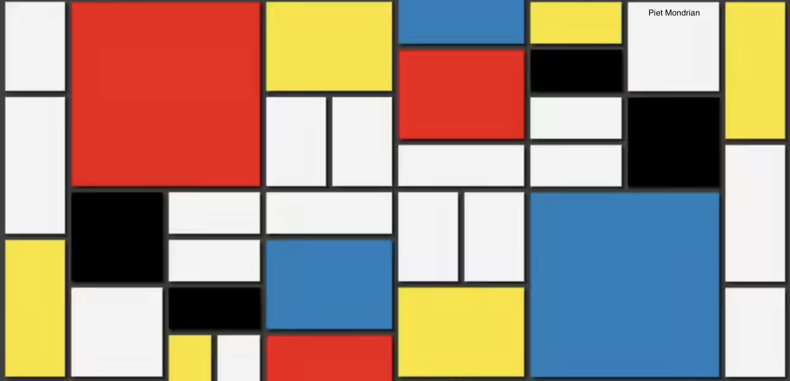

The SAO/NASA Astrophysics Data System (ADS) has an updated compilation of my publications. Follow this link to see it.
Processes
Lesson Planning and Execution
Data Visualization (2022-II) 3 SCT
Young Stellar Clusters (2022-I) 3 SCT (Shared class with an astronomer)
Substellar Objects (2022-I) 6 SCT
Advanced Astrophysical Lessons (2022-I) 6 SCT (Shared class with astronomers)
Advanced Astroinformatics Lessons (2022-I) 6 SCT (Shared class with astronomers)
Machine Learning (2022-I) 6 SCT (Shared class with an astronomer)
Introduction to Research (2022-I) 12 SCT
Observational Astronomy (2018-2021/I) 5 SCT
Exoplanets and Planetary Systems (2019/I) 5 SCT
Astrobiology (2020-2021/I) 5 SCT (Shared class with a biologist)
Journal Club I/II (2018-II) 2 SCT (Shared class with an astronomer)
Thesis Project (2019-II) 16 SCT (Shared class with an astronomer)
Invited professor: 41th International School for Young Astronomers. ISYA2018 (IAU).
Representation and Managment (selection)
Ph.D. thesis and Ph.D. thesis candidature Committes at Instituto de Astrofísica de Canarias (Spain), Universidad Nacional Autónoma de México (México) and Universidad de los Andes (Colombia).
ALMA-ANID fund for the Chilean Astronomy Development. Titular Member (2018-2021).
Chilean National Time Allocation Committe. Titular Member (2019-2020).
Redesign Committe M.Sc. Astronomy at Universidad de Antofagasta. Titular Member (2020-2021).
Design Committe Ph.D. Astrophysics and Astroinformatics at Universidad de Antofagasta. Titular Member (2020-2021).
Council M.Sc. Astronomy at Universidad de Antofagasta. Titular Member (2018-2020).
Council Ph.D. Astrophysics and Astroinformatics at Universidad de Antofagasta. Titular Member (2022- ).
Council Red de Estudiantes Colombianos en Astronomía (RECA) Interships. Titular Member (2022-2023).
Mentoring and supervision
M.Sc. Thesis. Jorge Anaís Vilchez (2020).
M.Sc. Thesis project. Daniela Barrios (2023).
Mentorship at Red de Estudiantes Colombianos en Astronomía (RECA). Juan Rodriguez, Sebastián Rueda, Bryam Pinilla, Natalia Oliveros (2020- ).
Skills Building and Collegiaty
Data "streaming" skills: Python (intermediate), R (intermediate), statistics (advanced), data visualization
(intermediate), unsupervised machine learning (intermediate).
Communication skills (academic): various invited oral presentations in national and international conferences.
Communication skills (non-academic): lead (or main guest) on various local, national and international scale science engagement initiatives. Currently working on AstroMicro.
Peer review: Astronomy & Astrophysics, Nature Astronomy and Universe journals.
Projects

The VVV Open Cluster Project (current)
The study of the Milky Way is the study of our place in the universe. In the last decade, significant resources have been devoted to this topic, mainly using the groundbreaking Gaia satellite, but the vast majority of the stars in our Galaxy remain hidden to us.
This has to do with the fact that the plane of the Milky Way, were stellar de nsity is highest, also concentrates most of the interstellar gas and dust. This material impedes our view of the stellar and high-mass substellar component, but wavelengths past the micron can pierce these clouds. Based on this, the VVV survey (Vista Variables in the Via Lactea and its extension) has been mapping the Milky Way for the last eleven years between 1 and 3 microns with the VIRCAM camera at ESO Paranal Observatory, giving us multi-epoch images of the plane of the Galaxy visible from Chile.
Combining the piercing capabilities of the near-infrared with the information density of multi-epoch surveys, VVV gives us very precise static quantities like positions and magnitudes, complimented with dynamic measurements like apparent motion and brightness variability. All of this for stars deeper in the Milky Way that has been possible to do before.
We will use this richness of data to study open clusters, young associations of stars that speckle our Galaxy, and that can be used to infer its structure, evolution, and some of its properties, like the star formation history. By unveiling the low-mass population of our Galaxy processes, such a cluster formation, balance and dissolution would be better constrained. This, in turn, will help us to understand the place of the Milky Way within the galactic zoo of the local universe.
Credentials
Current position: Associate Professor. Universidad de Antofagasta, Chile.
Diploma Climate Change and Low Carbon Development. Universidad de Chile, Chile 2020.
Ph.D. Astrophysics. Instituto de Astrofísica de Canarias / Universidad de La Laguna. Spain, 2012.
M.Sc. Astrophysics. Instituto de Astrofísica de Canarias / Universidad de La Laguna. Spain, 2010.
Physics. Universidad Nacional de Colombia, Colombia, 2008.